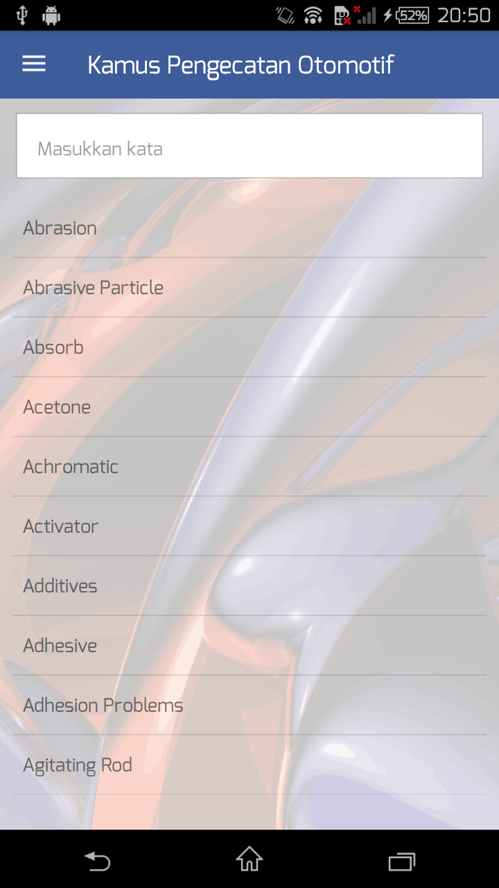
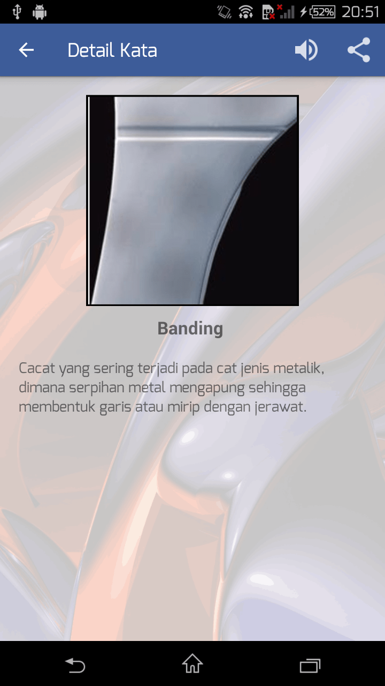
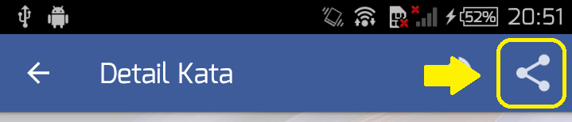
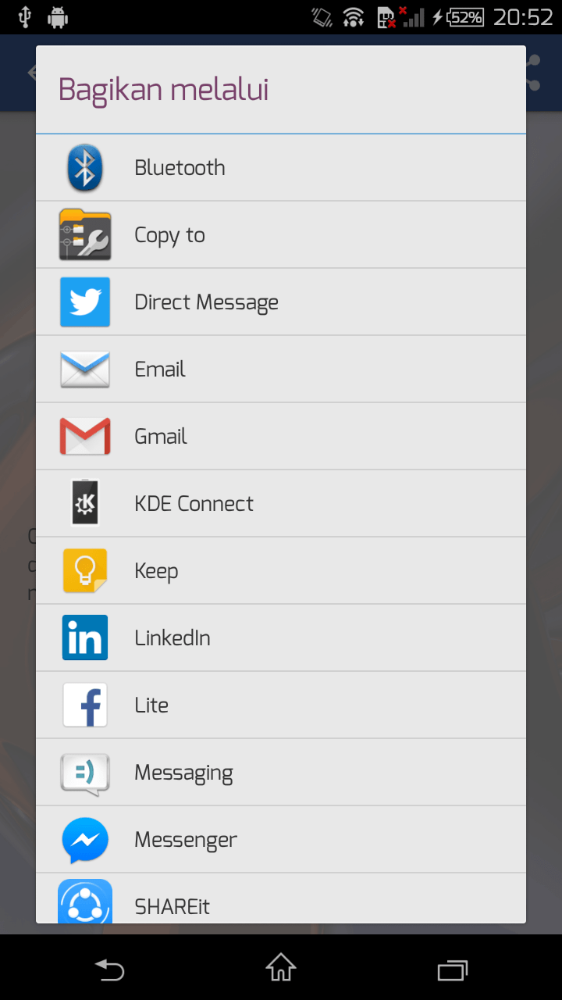
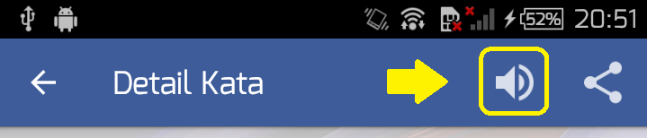
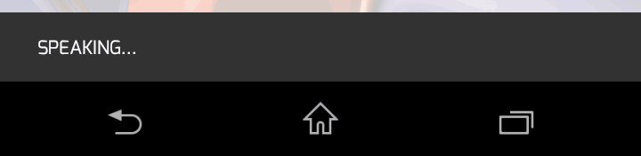
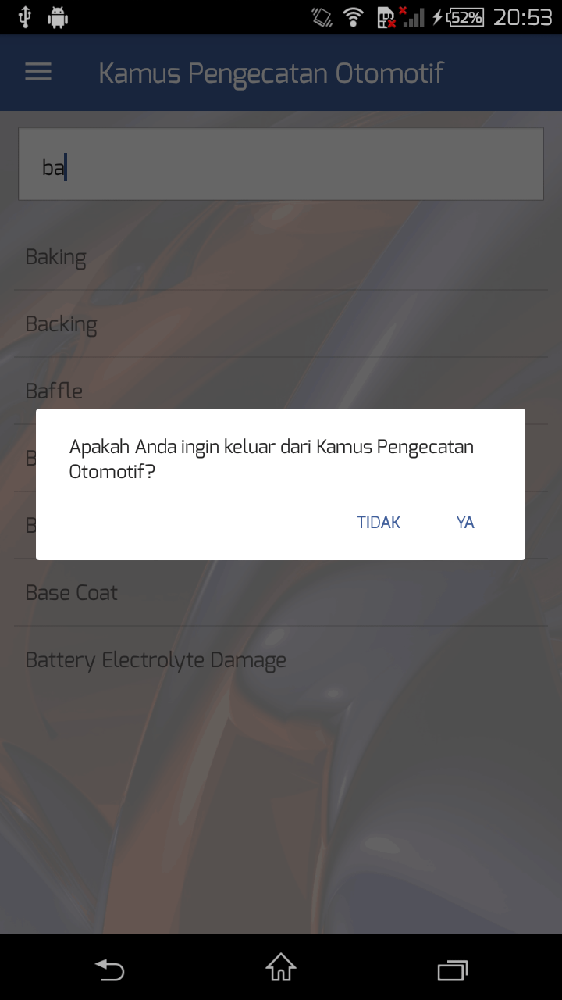

Dalam aplikasi ini terdapat 4 (empat) fitur yakni sebagai berikut:
Fitur kamus merupakan fitur utama aplikasi ini. Setelah Anda membuka aplikasi ini dari Home Screen, Anda akan langsung mendapatkan fitur ini.

Secara default keyboard akan seketika muncul ketika Anda membuka aplikasi ini, sehingga Anda dapat secara langsung mengetikkan kata kunci pencarian pada kotak "Masukkan Kata".
Setelah Anda memasukkan beberapa kata kunci, daftar kata yang sesuai dengan kata kunci yang dimasukkan akan muncul. Anda tinggal menyentuh pada kata yang terdapat pada daftar pencarian untuk memunculkan informasi yang lebih lengkap.

Setelah Anda mendapatkan informasi dari kata yang Anda pilih tadi, Anda dapat membagikannya kepada orang lain. Untuk dapat membagikan kata beserta informasinya, Anda tinggal menyentuh pada ikon "berbagi" (lihat gambar) dan memilih media untuk membagikannya.


Selain membagikannya kepada orang lain, Anda juga dapat melihat gambar pada kamus lebih besar lagi. Anda hanya perlu menyentuh pada gambar yang ada pada kamus.

Setelah gambar terbuka, Anda dapat memperbesar dan memperkecilnya dengan melakukan pinch in dan pinch out

Anda juga dapat mendengarkan pengucapan dari kata yang Anda pilih. Cukup dengan menyentuh pada ikon "suara" untuk mendengarkan suaranya, dan akan muncul notifikasi "Speaking..." pada sisi bawah aplikasi yang menunjukkan Aplikasi sedang memutar audio pengucapan pada kata yang Anda pilih.


Jika Anda sudah merasa cukup dan Anda ingin keluar dari aplikasi, sentuh tombol back pada perangkat Anda atau menyentuh ikon back pada sudut kiri atas aplikasi hingga kembali ke fungsi kamus. Setelah itu, sentuh tombol back sekali lagi untuk memunculkan notifikasi untuk keluar dari aplikasi.

Sentuh "Ya" jika Anda ingin keluar dari aplikasi atau "Tidak" untuk tetap berada di dalam aplikasi
Fitur bantuan adalah fitur pendamping dari aplikasi kamus pengecatan ini. Fungsinya adalah sebagai referensi bantuan penggunaan aplikasi ini. Untuk mendapatkan bantuan, sentuh ikon menu pada sisi kiri atas aplikasi dan pilih "Help".
Fitur informasi aplikasi adalah fitur pendamping dari aplikasi kamus pengecatan ini. Fungsinya adalah untuk menampilkan informasi-informasi yang berkaitan dengan pengembangan aplikasi ini. Untuk mendapatkan bantuan, sentuh ikon menu pada sisi kiri atas aplikasi dan pilih "About".
Fitur informasi aplikasi adalah fitur pendamping dari aplikasi kamus pengecatan ini. Fungsinya adalah untuk menampilkan referensi-referensi yang digunakan untuk menyusun kamus pengecatan otomotif ini. Untuk mendapatkan bantuan, sentuh ikon menu pada sisi kiri atas aplikasi dan pilih "Reference".